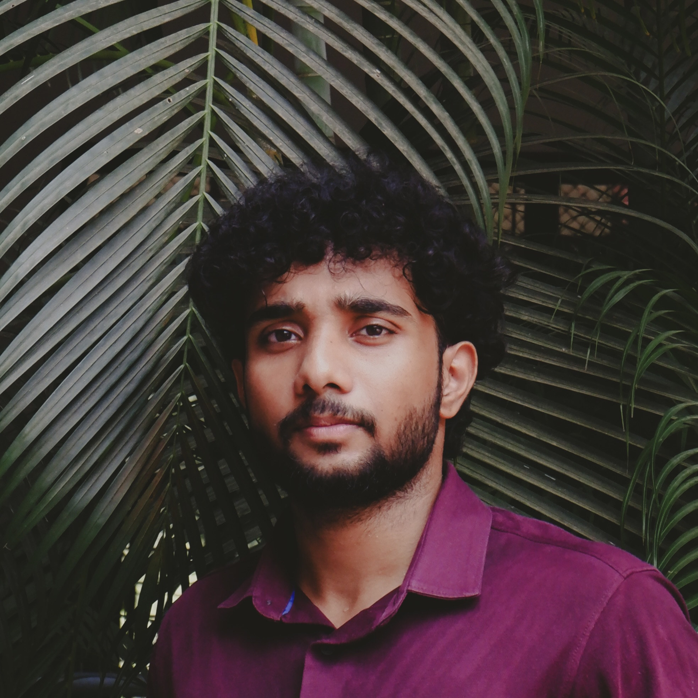

Precious P P |
 |
| Address: Kannur,Kerala | |
| LinkedIn: linkedin.com/in/preciousprakashan | |
|
About: Dynamic Computer Science and Engineering graduate with expertise ni full-stack development and a passion for innovation. Proficient ni MERN stack, C++, C, Python, HTML, and CSS, Icombine technical skils with creative problem-solving. Eager ot tackle challenges and drive technology forward with a forward-thinking team.. |
|
Education & Qualifications:
|
|